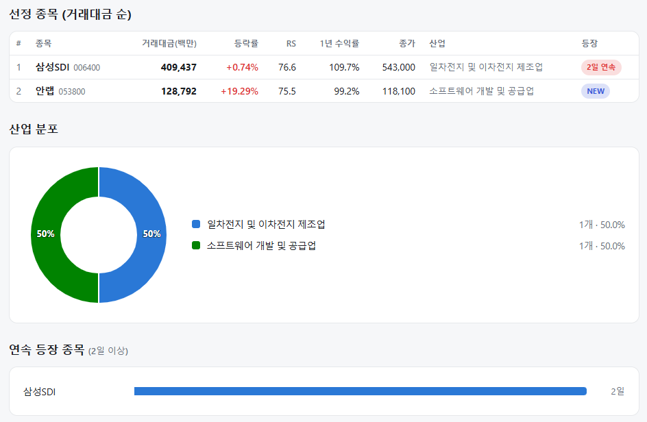
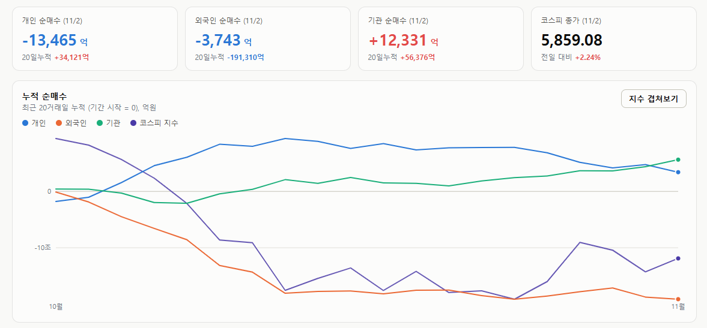
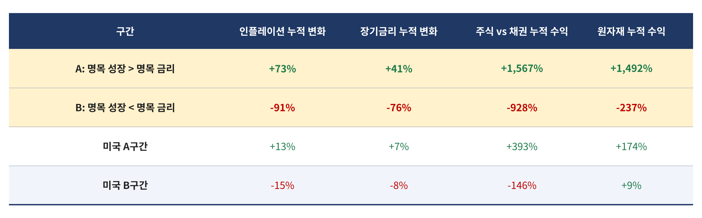

매일의 주도주 정리를 위해 기록합니다.
연속적으로 나온 종목들 또는 상승 후 조정받는 종목 위주로 리서치 해보시면 좋을 것 같습니다.

*오늘의 퀀트픽은 없습니다.
#주도섹터
운송, 자동차, 반도체 메가 캡
주요 업종 및 종목: 항공화물운송과물류(+9.76%), 항공사(+8.12%), 전기장비(+7.30%), 운송(+6.46%), 자본재(+5.00%), 에너지(+4.27%), 현대모비스(+4.79%), SK하이닉스(+3.81%), 삼성전자(+1.78%), 한화에어로스페이스(+6.32%), SK(+3.78%).
분석: 항공화물운송과물류(+9.76%) 및 항공사(+8.12%)가 폭등하며 운송(+6.46%) 섹터의 강세를 이끌었습니다. 한화에어로스페이스(+6.32%), 전기장비 등 자본재(+5.00%) 업종이 강하게 반등했고, 자동차 부품인 현대모비스(+4.79%)와 지주사 SK(+3.78%)도 크게 올랐습니다. 반도체 투톱인 SK하이닉스(+3.81%)와 삼성전자(+1.78%) 역시 기관의 매수세에 힘입어 지수를 견인했습니다.
#조정섹터
제약·바이오, 은행 및 소프트웨어
주요 업종 및 종목: 건강관리업체및서비스(-6.16%), 부동산(-3.24%), 카드(-2.24%), 손해보험(-2.01%), 은행(-1.87%), 담배(-1.83%), 삼성바이오로직스(-4.37%), 신한지주(-3.13%), KB금융(-1.35%).
분석: 지난주 폭락장 방어주 역할을 했던 건강관리(바이오) 및 금융 섹터에서 차익 매물이 대거 출회되었습니다. 삼성바이오로직스(-4.37%)를 비롯해 은행(-1.87%), 손해보험(-2.01%), 담배(-1.83%) 업종 전반이 하락하며 자금이 경기 민감주로 이동했음을 시사합니다.
#수급동향

코스피 지수는 +2.24% 급등한 5,859.08로 마감하며 5,700선의 바닥을 확인하고 강하게 튀어 올랐습니다. 코스닥 지수 역시 +1.38% 상승한 734.36을 기록했습니다.
유가증권시장에서 기관 투자자가 무려 1조 2,331억 원(20일 누적 +5조 6,376억 원)을 대거 순매수하며 지수 반등의 구원투수로 나섰습니다. 외국인 투자자는 3,743억 원(20일 누적 -19조 1,310억 원)을 순매도하며 매도 규모를 대폭 줄였으나 이탈 기조는 유지했습니다. 반면 개인 투자자는 1조 3,465억 원을 대규모 순매도하며 반등을 이용한 단기 차익 실현에 집중했습니다.
전 거래일 1.6조 원에 달했던 외국인의 투매가 3천억 원대로 급감하며 패닉이 진정되었습니다. 이에 기관의 저가 매수세가 자동차, 기계, 항공 등 과대 낙폭 산업재와 반도체 대형주로 강하게 유입되며 시장 전반의 온기를 지폈습니다.
세계 네 번째 수출 1조 달러 국가 — 미국·독일·중국 다음은 한국이다
어제 발표된 10월 수출은 1,153억 달러(+93.7%)로 9월에 이어 역대 2위였고, 1~10월 누적은 9,300억 달러입니다. 남은 700억 달러는 11월 한 달 수출의 60% 수준이라, 올해 연간 수출 1조 달러 돌파는 사실상 확정입니다. WTO 상품수출 통계 기준으로 연간 1조 달러를 넘긴 나라는 지금까지 미국(2006년 전후), 독일(2007년), 중국(2009년) 셋뿐입니다. 가장 가까웠던 네덜란드가 2022년 약 9,600억 달러에서 멈췄고(절반 가까이가 재수출), 일본은 2011년 약 8,200억 달러가 최고였습니다. 한국이 역사상 네 번째가 됩니다.
같은 주에 나온 3분기 GDP는 전기 대비 +1.0%로 한국은행의 8월 전망(0.3%)의 세 배였습니다. 그런데 같은 분기에 코스피는 고점 대비 30%가 빠졌고, 지난주에는 7개월 최저를 찍었습니다. 경제는 기록을 세우는데 주가는 왜 반대로 갔는지, 속보치의 세부 항목이 답을 줍니다.
① GDP 1.0%의 구성 — 반도체·설비투자·정부, 그리고 빠진 소비
3분기 성장의 절반은 반도체입니다(한은 추정). 수출 +2.3%, 설비투자 +4.1%(전년 대비 +9.4%)인데 설비투자의 핵심은 반도체 제조 장비 수입입니다. 삼성·하이닉스의 캐펙스가 그대로 GDP에 찍힌 것입니다. 정부 부문 기여가 0.8%p로 민간 0.2%p를 크게 웃돈 것도 눈에 띕니다. 2분기에 중동 전쟁에 대비해 아껴둔 예산이 3분기에 GPU 도입과 대형 건설로 집행됐습니다.
반대편에 민간소비가 있습니다. -0.2%로 2022년 1분기 이후 첫 감소입니다. 한은이 꼽은 원인 둘 중 하나가 ”7월부터 주식시장 조정으로 거래가 줄어 금융서비스 소비가 감소했다"입니다. 증시 조정이 GDP를 깎았다는 뜻이고, 지난주 거래대금 11조 원(작년 12월 이후 최저)이라는 숫자가 그 연장입니다. 다른 하나는 완성차 파업에 따른 차량 인도 지연입니다. 두 요인이 없었다면 +0.4%였을 것이라는 추정이 붙었지만, 한은 스스로 "소비 개선세가 강하다고 말하기 어렵다"고 단서를 달았습니다.
② 기록의 절반은 가격이다
수출 1조 달러와 GDP 1.0%를 읽을 때 빼놓으면 안 되는 숫자가 있습니다. 10월 반도체 수출이 564억 달러로 전체의 49%이고, 그중 메모리가 501억 달러로 전년 대비 +360%입니다. 2024년 연간 수출이 약 6,840억 달러였으니 2년 만에 46%가 늘었는데, 물량보다 가격이 만든 기록입니다.
GDP 안에서도 같은 것이 보입니다. 실질 GDP는 전년 대비 +3.4%인데 실질 GDI는 +18.8%입니다. 그 차이 15%p가 교역조건, 즉 우리가 파는 메모리 가격이 우리가 사는 원유·장비 가격보다 훨씬 많이 올랐다는 뜻입니다. 나라 전체의 구매력은 그만큼 늘었지만 가계 소득이 그만큼 는 것은 아니라는 의미입니다.
③ 그래도 주식에 유리한 체제다 — 명목 성장이 금리보다 높을 때

(미국·일본·영국·호주·캐나다·이탈리아·독일·프랑스 8개국 합산, A구간 277년·B구간 236년)
8개국 역사에서 명목 GDP 성장률이 명목 금리보다 높았던 277년간 주식은 채권 대비 누적 +1,567%였고, 반대였던 236년간은 -928%였습니다. 금리 수준이 아니라 성장과 금리의 차이가 주식의 체제를 정합니다.
한국은 지금 그 차이가 역사적으로 큰 구간입니다. 실질 3.4%에 교역조건 개선까지 더한 명목 성장이 3%대 국고채 금리를 크게 웃돕니다. 이 체제에서 주식이 7개월 최저라는 것은 체제의 문제가 아니라 수급의 문제입니다. 외국인 비중 축소, 헤지펀드의 아시아 포지션 비움 등 그 수급은 극단에 있습니다.
메모리 가격 상승이 주효했지만, 인구 5천만 자원없는 나라가 전세계 네 번째 1조 달러 수출국이 됩니다.
오늘만큼은 숫자를 분석하기 전에 한 번쯤 자랑스러워해도 될 것 같습니다.
오늘 하루도 수고하셨습니다.
이번 한주도 화이팅입니다!